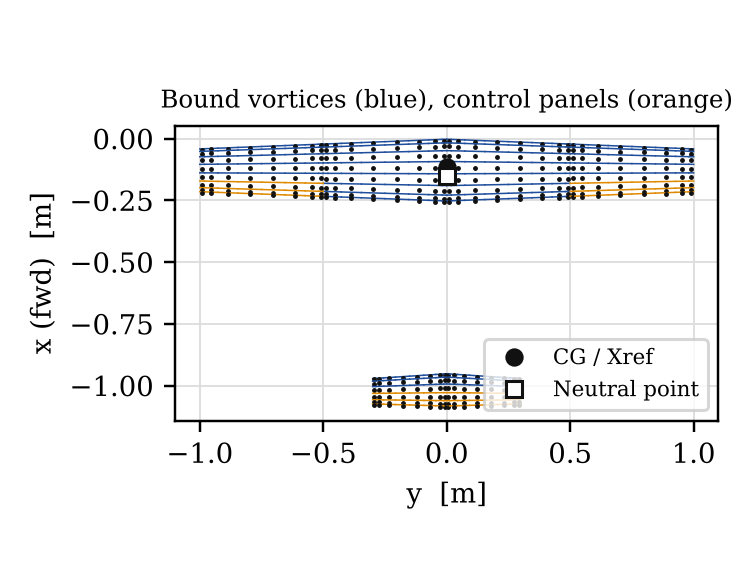
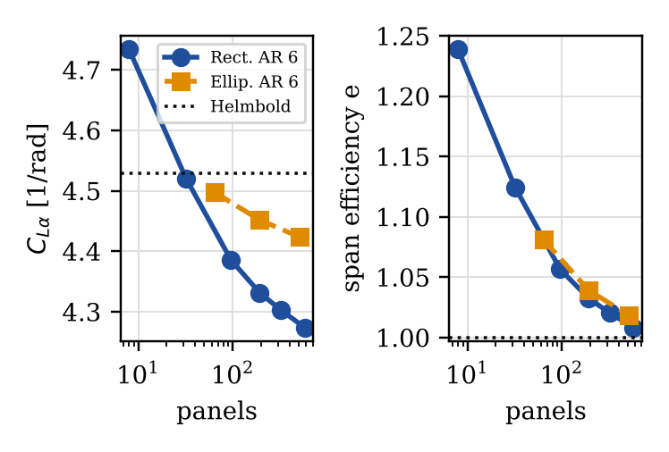
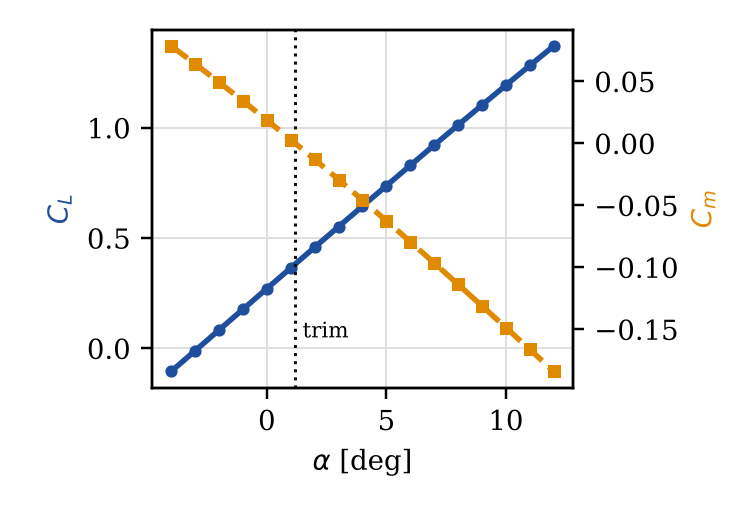
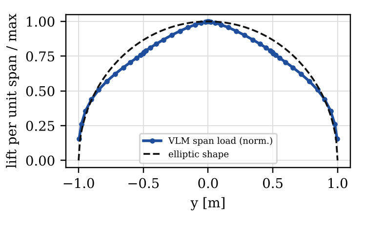
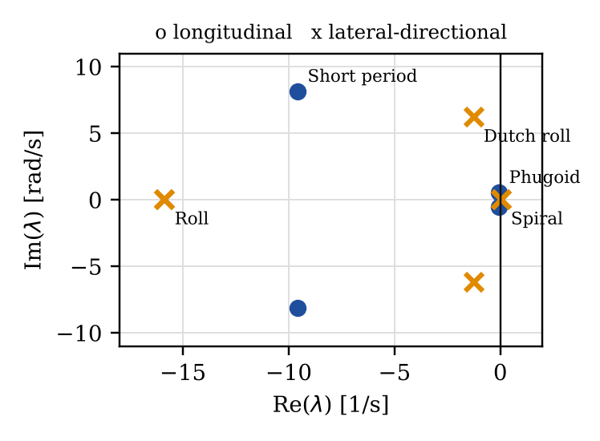
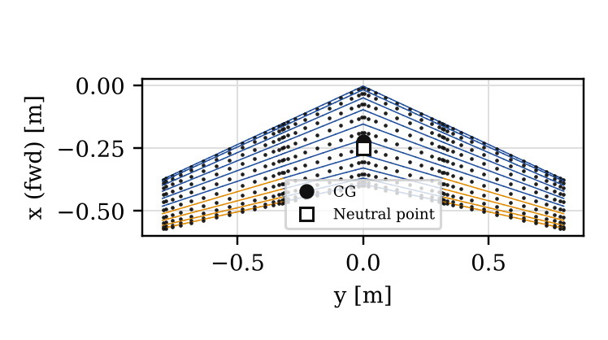

Abstract
AVL (Athena Vortex Lattice) is a small, free program from MIT that has become one of the most widely used tools for the early aerodynamic and flight-dynamic analysis of fixed-wing aircraft and unmanned air vehicles (UAVs). It was first written by Harold Youngren around 1988 for MIT's Project Athena teaching computers and was then developed for more than three decades by Mark Drela and Youngren. AVL combines an extended vortex-lattice model of the lifting surfaces with a slender-body model of fuselages, trims the aircraft, returns a full set of stability and control derivatives in seconds, and performs a rigid-body eigenmode analysis. This paper traces the lineage of the vortex-lattice method from Prandtl and Falkner to AVL, records the release history of AVL itself, explains its formulation and the practical workflow for derivative extraction, and surveys how the code is used today in teaching, UAV development, open-source autopilot simulation and conceptual-design frameworks. It then reviews the improvements made by other researchers: scripting wrappers, automatic-differentiation versions for gradient-based optimisation, sister codes for blown lift and flexible aircraft, nonlinear post-stall corrections, compressibility and propeller-slipstream extensions. A complete worked example on a 2 m span, 3.2 kg conventional UAV is given, with validation of the lattice formulation against lifting-surface theory, a lattice-convergence study, trim, the derivative matrix, neutral point, dynamic modes, design sensitivities and a surface-by-surface breakdown, followed by a second example on a tailless flying wing. The limitations of AVL are listed in a form that can be used as a checklist, and a research roadmap is proposed.
Index Terms—AVL, vortex lattice method, stability derivatives, control derivatives, flight dynamics, UAV, neutral point, eigenmode analysis, conceptual design, low-order aerodynamics.
1. Introduction
Every aircraft programme needs numbers for lift-curve slope, pitching-moment slope, neutral point, roll and yaw damping, control power and the cross-coupling terms long before a wind-tunnel model exists. The traditional sources were the USAF DATCOM handbook and its digital version, Digital DATCOM, which rely on correlations from conventional configurations. Computational fluid dynamics (CFD) gives far richer information, but each Reynolds-averaged Navier–Stokes (RANS) case costs hours, and a full stability-derivative set needs many cases with rotating frames or prescribed motion.
Between these two extremes sit low-order potential-flow methods. Among them, the vortex lattice method (VLM) is the workhorse: it represents each thin lifting surface by a grid of horseshoe vortices, solves a small linear system and integrates the loads. AVL is a particularly capable and robust implementation. Its input is a short, readable text file; it runs in a fraction of a second on any computer; and it directly prints the stability-axis derivative matrix including rate and control derivatives. For these reasons it is the default first tool in many university design courses, student competitions, small-UAV companies and research groups, and it is embedded in several open-source design frameworks.
The author's own use of AVL has been for determining stability derivatives of aircraft and UAV configurations. Experience shows that the program is easy to run but easy to misuse: the reference quantities, the sign conventions, the treatment of fuselages and the limits of the quasi-steady, inviscid, linear model all need care. The aim of this paper is therefore practical as well as historical. It brings together, in one place:
- the lineage of the vortex lattice method and the history of AVL (Sections 2–3);
- the formulation and the derivative-extraction workflow (Sections 4–5);
- current usage and published validation experience (Section 6);
- improvements and extensions by other researchers (Section 7);
- two worked UAV examples, conventional and tailless, with validation, convergence, trim, derivatives, modes and sensitivities (Section 8);
- the limitations, as a usable checklist (Section 9), and a way ahead (Section 10).
2. Lineage of the Vortex Lattice Method
2.1 From lifting line to the lattice
The VLM is a discrete form of lifting-surface theory. Prandtl's lifting-line theory (1918–1923) replaced a high-aspect-ratio wing by a single bound vortex along the quarter-chord line, shedding a sheet of trailing vorticity whose downwash reduces the effective angle of attack and produces induced drag [1]. Lifting-line theory is excellent for straight, high-aspect-ratio wings but cannot capture chordwise loading, sweep effects at low aspect ratio, or interference between several surfaces.
The step to a lattice was taken in Britain during the Second World War. Falkner used a grid of horseshoe vortices distributed over the wing planform and introduced the name “vortex lattice” in 1943 [2]; with hand calculation and mechanical desk calculators, solutions with of the order of a hundred vortices were already standard. The arrangement used today—bound vortex on the panel quarter-chord, control (collocation) point at the panel three-quarter chord, trailing legs to downstream infinity—was established by Hedman in 1965 for digital computers, with compressibility handled through the Prandtl–Glauert transformation [3]. The quarter-chord/three-quarter-chord rule (sometimes called the Pistolesi or “1/4–3/4” rule) is what makes a single vortex per chordwise panel reproduce the thin-aerofoil lift-curve slope of 2π exactly.
2.2 The NASA and industry codes of the 1970s
The 1970s saw an explosion of VLM codes. At NASA Langley, J. E. Lamar developed vortex-lattice programs for interacting lifting surfaces and for the vortex lift of slender, sharp-edged wings using the leading-edge suction analogy [4]. C. Edward Lan introduced the quasi-vortex-lattice method (QVLM), which places vortices and control points using a Chebyshev-type distribution to resolve leading-edge singularities and leading-edge thrust more accurately [5]. At Lockheed, L. R. Miranda, R. D. Elliott and W. M. Baker produced VORLAX, a generalised vortex-lattice code for subsonic and supersonic flow that could also model thickness through a “sandwich” of two lattices [6], [7]. Albano and Rodden extended the lattice idea to oscillating surfaces in the doublet-lattice method (DLM) [8], which is still the standard unsteady aerodynamic model in flutter analysis. The state of the art of that period was recorded in the 1976 NASA Langley workshop on vortex-lattice utilisation, NASA SP-405 [9]. Textbook accounts appear in Katz and Plotkin [10], Bertin and Smith, Anderson, and Drela's Flight Vehicle Aerodynamics [11].
2.3 What a VLM gives and does not give
A VLM solves Laplace's equation for incompressible (or Prandtl–Glauert-corrected), inviscid, irrotational flow. Lifting surfaces are represented as zero-thickness vortex sheets, and the boundary condition of zero normal velocity is applied on the mean surface. The method therefore yields lift, induced drag, pitching, rolling and yawing moments, span loading and chordwise load distribution, but not viscous drag, thickness effects or flow separation [12]. These properties make it ideal for stability derivatives in the linear range, which depend primarily on the lifting-surface geometry and on the interference of downwash and sidewash between surfaces.
3. History of AVL
3.1 Project Athena and the original code
The name “Athena” comes from MIT's Project Athena, a joint programme of MIT, Digital Equipment Corporation and IBM, launched in May 1983 and run until 30 June 1991, whose purpose was to put a campus-wide, Unix-based distributed computing environment into undergraduate education [13]. The project cost about US$100 million over eight years and gave the world, among other things, the X Window System and the Kerberos authentication system [14].
According to the AVL documentation, AVL 1.0 was written by Harold Youngren circa 1988 as part of the “MIT Athena TODOR” collection of aerodynamic teaching software. The code drew on the classical work of Lamar (NASA), Lan and Miranda (VORLAX) and others. Since then Mark Drela and Harold Youngren have added so many modifications that, in the documentation's words, only “stubborn traces” of the original Athena code remain [15]. Drela, Professor of Fluid Dynamics at MIT and the author of XFOIL, MSES/MISES and ASWING, was elected to the US National Academy of Engineering in 2009 for aircraft designs and design software that enabled operation in new flight regimes [16]. Youngren was associated with Aerocraft, Inc.
3.2 Release history
The public web page for AVL was created on 1 September 2004 with version 3.14. Table 1 summarises the main releases recorded on that page [17]. Two points are notable. First, development has been steady and conservative: most releases fix bugs or clarify output, so results from different 3.xx versions are generally consistent. Second, the 2014 release (3.35) added second-order right-hand-side terms to the vortex-lattice system, improving trim convergence and eigenmode results at large control deflections. The current version, 3.40b, was released on 18 April 2022 by Steven Allmaras; it adds output options and switches the matrix solver to LAPACK.
| Date | Version | Notable change |
|---|---|---|
| c. 1988 | 1.0 | Written by H. Youngren for MIT Athena TODOR collection |
| Sep 2004 | 3.14 | Public web page created |
| Oct 2004 | 3.15–3.16 | Compilation fixes; first Windows executable |
| Aug 2005 | 3.18 | Side-force (CY) constraint added |
| Oct–Nov 2005 | 3.20–3.22 | Stability-axis yaw-rate printing and Cl/Cn axis-transformation fixes; derivative output clarified |
| Apr 2006 | 3.26 | Leading-edge-flap hinge moment fix |
| May 2008 | 3.27 | CLAF influence removed from zero-lift angle |
| Apr 2011 | 3.31 | Linux build; run-case directory |
| Dec 2012 | 3.32 | Strip centre-of-pressure post-processing fixed |
| Feb 2014 | 3.35 | Second-order RHS: better trim and eigenmodes at large deflections |
| Feb 2017 | 3.36 | Fixes and tweaks; widely used reference version |
| Apr 2022 | 3.40b | S. Allmaras: more output, LAPACK solver |
3.3 Licence and distribution
AVL is distributed as Fortran and C source with executables for Linux, Windows and macOS. The web page allows anyone to copy, modify and redistribute AVL or modified versions, provided redistribution is under the terms of the GNU General Public License [17]. This licence is the reason so many derived codes and wrappers (Section 7) can exist openly.
3.4 The AVL family
Two later MIT codes share AVL's structure and file conventions. ASWING analyses aircraft with flexible wings and fuselages of moderate to high aspect ratio, coupling aerodynamics, nonlinear beam structures and control response; it is licensed commercially through the MIT Technology Licensing Office [18]. JVL (Jet Vortex Lattice), whose page was created in May 2024, extends AVL to blown-lift configurations by modelling jet sheets of finite thickness that extend ahead of and contact the wing, together with the forces of the propulsors that create them [19]. JVL grew out of MIT's research on distributed-electric-propulsion super-short take-off and landing aircraft, where subscale flight tests demonstrated lift coefficients above 10 [20].
3.5 Timeline
Table 2 places AVL in the wider chronology of the vortex-lattice method and the tools built around it.
| Year | Event |
|---|---|
| 1918–23 | Prandtl lifting-line theory [1] |
| 1943 | Falkner names the “vortex lattice” [2] |
| 1965 | Hedman: digital VLM with 1/4–3/4 rule and Prandtl–Glauert [3] |
| 1969 | Albano & Rodden doublet-lattice method [8] |
| 1974–77 | Lan QVLM [5]; Lamar codes [4]; VORLAX [6] |
| 1976 | NASA SP-405 vortex-lattice workshop [9] |
| 1983–91 | MIT Project Athena [13] |
| c. 1988 | AVL 1.0 (Youngren) [15] |
| 2000 | Tornado VLM (Melin, KTH) [42] |
| 2004 | AVL 3.14 public web release [17] |
| 2006 | Decambering for post-stall multi-surface VLM [46] |
| 2014 | AVL 3.35: second-order RHS [17] |
| 2015 | SUAVE with AVL stability module [25] |
| 2017 | AVL 3.36 [17] |
| 2018 | PyTornado (Airinnova) [43] |
| 2019–23 | avlwrapper releases [36] |
| 2022 | AVL 3.40b (Allmaras, LAPACK) [17] |
| 2020s | pyAVL, then OptVL with AD derivatives [21], [38] |
| 2024 | JVL for blown lift [19] |
| 2025 | ASWING Extended User Manual (ISAE) [41] |
4. Formulation of AVL
4.1 Geometry description
AVL uses a keyword-driven text file. Each surface is defined by two or more sections, each section giving the leading-edge position (Xle, Yle, Zle), chord and incidence. Geometry is interpolated linearly between sections. Camber comes from a NACA four-digit designation or an aerofoil coordinate file. Surfaces can be scaled, translated, rotated, and mirrored about the y = 0 plane with YDUPLICATE. Fuselages and nacelles are entered as bodies with a radius distribution. Panel counts and spacing (uniform, sine, cosine or blended) are given per surface or section [15].
AVL's geometry axes have x pointing aft, y to the right wing and z up. Derivatives and moments are reported with the usual flight-dynamics sign conventions (positive roll right wing down, positive pitch nose up, positive yaw nose right).
4.2 Singularities and boundary condition
Each lifting-surface panel carries a horseshoe vortex: a bound segment along the panel quarter-chord and two trailing legs that run to downstream infinity parallel to the x axis. The flow-tangency condition is imposed at the three-quarter-chord control point of each panel:
(V∞ + Ω × r + Σj vij Γj) · ni = 0, i = 1 … N (1)
where vij is the velocity induced at control point i by a unit-strength horseshoe j (Biot–Savart law), Ω = (p, q, r) is the body rotation rate and ni the panel normal. Note the sign of the rotation term depends on whether the velocity of the air relative to the aircraft or of the aircraft relative to the air is used; AVL works with the former. A key feature of AVL is that camber, incidence and control deflections are not modelled by moving the panels; instead the normal vector ni is tilted. This keeps the influence matrix fixed for a given geometry, so control derivatives and trimmed solutions are obtained cheaply. Hinge lines may be placed independently of the panel grid [15].
Bodies are modelled by source and doublet line singularities along their axes (slender-body theory), and a finite-core option prevents singular velocities when a trailing leg passes close to a control point. Image surfaces, which see only perturbation velocities, are used for ground effect, wind-tunnel walls or a neighbouring aircraft.
4.3 Forces, Trefftz plane and drag
Once the circulations Γj are found from the N × N linear system (1), forces on each bound segment follow from the Kutta–Joukowski law,
Fi = ρ Γi (Vlocal,i × li) (2)
where li is the bound-segment vector and Vlocal includes free stream, rotation and all induced velocities. Moments are summed about the reference point (Xref, Yref, Zref). Induced drag is also evaluated in the Trefftz plane far downstream, where it depends only on the trailing vorticity; the AVL documentation notes that the Trefftz-plane value CDi is generally more reliable than drag from surface-force integration [15]. Profile drag can be added through a parabolic CD(CL) polar (CDCL) given per section, with rapid drag rise outside the specified CL range to mimic stall, and through a constant CDp.
4.4 Compressibility
Subsonic compressibility is handled with the Prandtl–Glauert transformation: the geometry is stretched in x by 1/β, β = (1 − M2)1/2, the incompressible problem is solved, and the results are scaled back. The AVL primer rates this treatment as valid up to about Mach 0.6, suspect at 0.7, unreliable at 0.8 and hopeless at 0.9, with the wing-perpendicular Mach number M cosΛ as the relevant parameter for swept wings [15].
4.5 Trim, derivatives and eigenmodes
The OPER menu sets operating variables (α, β, p̂, q̂, r̂, control deflections) directly or through constraints such as CL = value or Cm = 0, so trimmed states, banked turns and steady pull-ups can be computed. The ST command prints the stability-axis derivative matrix; SB prints body-axis derivatives [15]. Rate derivatives use the non-dimensional rates
p̂ = pb/2V, q̂ = qc/2V, r̂ = rb/2V (3)
and control derivatives are given per degree of deflection. Because AVL differentiates its own linear solution analytically, the derivatives are free from finite-difference step error. The neutral point Xnp is printed with the ST output; for a configuration with a single dominant lifting surface it is equivalent to
Xnp = Xref − cref · Cmα / CLα (4)
and the static margin is (Xnp − Xcg)/cref. With an optional mass file giving component masses, positions and inertias, the MODE menu linearises the rigid-body equations about the run case as u̇ = Au + Bδ with a 12-state vector, computes eigenvalues and eigenvectors, plots root loci against a parameter, animates the modes, and writes the A and B matrices for control-law design [15].
4.6 Mathematical details
Biot–Savart law for a straight segment. A straight vortex filament of strength Γ running from point P1 to P2 induces at a field point P the velocity
v = (Γ/4π) [(r1 × r2)/|r1 × r2|2] r0 · (r1/|r1| − r2/|r2|) (5)
with r0 = P2 − P1, r1 = P − P1 and r2 = P − P2 [10]. A horseshoe vortex is the sum of three such segments: a semi-infinite trailing leg arriving at the left end of the bound segment, the bound segment itself, and a semi-infinite trailing leg leaving its right end. The expression is singular on the filament line itself; AVL removes the singularity with a finite vortex core, whose size can be controlled by the user, and evaluates the semi-infinite legs in closed form.
Linear superposition and exact derivatives. Writing the right-hand side of (1) explicitly, the circulation vector satisfies
AΓ = −[V∞ + Ω × (rc − rref)] · n(δ) (6)
where A is the N × N aerodynamic influence coefficient matrix Aij = vij · ni. Because the right-hand side is linear in the three free-stream components and the three rotation components, AVL factors A once and solves for six “unit” circulation distributions. Any flight state is then a linear combination of these, and derivatives of Γ with respect to α, β, p, q, r follow by the chain rule without finite differencing. Control deflections enter through the tilted normals n(δ); to first order the tilt adds a right-hand-side term proportional to δ, so control derivatives are likewise obtained from additional unit solutions. The 2014 change to second-order right-hand sides keeps more terms of this expansion, which matters at large deflections [17].
Trefftz-plane drag. Far downstream the trailing vortex sheet produces only cross-flow velocities. If Γ(s) is the net circulation along the trace of the wake in the Trefftz plane and wn(s) the normal velocity it induces there, the induced drag is
Di = −(ρ/2) ∫ Γ(s) wn(s) ds, CDi = CL2/(πAe) (7)
which defines the span efficiency e. The far-field evaluation does not involve the large, nearly cancelling suction and pressure forces of the near field, which explains why it is more reliable than surface integration.
Slender bodies. For a body of local cross-sectional area Sb(x) in a cross-flow, slender-body theory gives a local normal-force distribution proportional to d(SbVn)/dx. AVL represents the body by a line of sources (for displacement) and doublets (for cross-flow), and the body influences and is influenced by the lattice. A well-known consequence of slender-body theory is that a closed body produces no net normal force but a destabilising pitching and yawing moment; this is the main reason that adding a fuselage moves the neutral point forward and reduces Cnβ.
4.7 Cost
The cost of the method is dominated by forming and factoring A, O(N2) and O(N3) respectively. For typical UAV and aircraft models with 500–3000 vortices, a complete run including all derivative unit solutions takes well under a second on a current laptop, which is why AVL is suitable for interactive design and for inner loops of optimisation.
5. Using AVL to Obtain Stability Derivatives
5.1 Workflow
The working sequence that the author and most users follow is shown below. It is simple, but each step has a known trap.
- Choose reference quantities. Sref, cref (mean aerodynamic chord) and bref must match those used in the flight-dynamics model that will consume the derivatives. A mismatch silently rescales every coefficient.
- Set the moment reference. Xref is normally the centre of gravity of the loading case under study. Moment derivatives (Cmα, Cmq, Cnβ, Cnr …) depend on it; force derivatives do not.
- Model the surfaces. Wing, horizontal and vertical tails, canards, winglets, with control surfaces defined by
CONTROLlines (hinge position as a fraction of chord, gain and sign of duplicate: −1 for ailerons, +1 for elevator). - Decide on the fuselage. Either a slender body, or—as the primer recommends when the fuselage has little aerodynamic influence—omit it but carry the wing lattice across the centreline [15].
- Lay out the lattice. Cosine spacing chordwise and spanwise; cluster at tips, taper breaks and control-surface edges; align spanwise stations of surfaces that lie one behind the other so that trailing legs do not pass near downstream control points [15].
- Trim. In
OPER, constrain CL to W/(qS) and Cm to zero with the elevator; for lateral cases constrain bank, roll and yaw moments. - Extract derivatives.
ST(stability axes) orSB(body axes); save to file for parsing. - Check convergence by repeating with about twice the panel count.
- Run modes with a mass file, or transfer the derivatives to an external six-degree-of-freedom simulation.
5.2 Typical output and its meaning
The ST listing gives, about the trimmed state, the derivatives of CL, CY, Cl, Cm and Cn with respect to α and β, with respect to p̂, q̂, r̂ and with respect to every control variable, plus the neutral point. Table 3 summarises how these are used.
| Derivative | Physical meaning | Used for |
|---|---|---|
| CLα, Cmα | lift and pitch stiffness | neutral point, short-period frequency |
| CLq, Cmq | pitch damping (tail) | short-period damping |
| CYβ, Cnβ | side force, weathercock stability | Dutch-roll frequency |
| Clβ | dihedral effect | spiral, Dutch roll |
| Clp | roll damping | roll-mode time constant |
| Cnp, Clr | yaw-due-to-roll, roll-due-to-yaw | spiral and Dutch-roll coupling |
| Cnr | yaw damping | Dutch-roll damping, spiral |
| Cmδe, Clδa, Cnδr | control power | trim, manoeuvre, actuator sizing |
| Cnδa | adverse aileron yaw | coordination, rudder sizing |
5.3 Practical cautions
Several recurring errors are worth recording. (i) AVL's rate derivatives are per unit of p̂ = pb/2V, so dimensional derivatives need the factor b/2V or c/2V. (ii) Stability-axis and body-axis derivatives differ when α is not small; external simulations usually want one or the other consistently. (iii) Control derivatives are per degree and the sign follows the hinge-vector convention; a positive deflection with the default hinge vector is trailing edge down. (iv) The α̇ and β̇ derivatives are not produced, because AVL is quasi-steady; they must be estimated separately (Section 8.6). (v) The AVL primer gives validity ranges for the rotation rates of about |p̂| < 0.10, |q̂| < 0.03 and |r̂| < 0.25 [15]. (vi) Output files print about four significant digits, which is inadequate for finite-difference gradients in optimisation [21].
5.4 Modelling guidelines for particular configurations
Conventional tail-aft aircraft. The main risk is the horizontal tail lying in or very near the plane of the wing wake. Because AVL's trailing legs are straight and parallel to x, a tail in the wing plane sees trailing legs passing through or very close to its control points. The remedies listed in the primer—matching spanwise spacing so that trailing legs fall between control points, using finite cores, or giving wing and tail the same COMPONENT index so they are treated as one lattice—should be applied, and the vertical offset of the tail should be modelled correctly [15]. A small vertical offset changes the downwash at the tail noticeably and hence Cmα.
T-tails and V-tails. T-tails are handled well because the horizontal surface sits clear of the wing wake and its end-plate interaction with the fin is captured by the lattice. V-tails (ruddervators) should be modelled as two inclined surfaces with a single control variable whose gain on the duplicated side is ±1 depending on whether the pitch or the yaw function is being represented; two separate control variables (one symmetric, one antisymmetric) with appropriate gains are clearer.
Flying wings and tailless aircraft. AVL is well suited to flying wings because the stability derivatives depend on sweep, twist and the span load, all of which the lattice resolves. Elevons are defined with two control variables using SgnDup = +1 (pitch) and −1 (roll). Winglets and fins at the tips should be lattices of their own with spacing matched at the junction. Because the static margin of a flying wing is small, Cmα must be converged carefully, and the influence of a centre body (if any) on Cmα is significant.
Canards and tandem wings. The canard wake strikes the main wing; with straight, x-parallel trailing legs this interaction can be over- or under-predicted depending on the vertical gap. Results for close-coupled canards at moderate α should be checked against higher-fidelity tools.
High-lift and multi-surface controls. Flaps, flaperons, spoilers modelled as negative camber, and differential elevators are all possible with additional control variables. Hinge moments are printed per control variable and are useful for actuator sizing, with the caveat that viscous effects on hinge moments are large.
Fuselage decisions. For small UAVs with slender pods, the author's practice and the primer's advice coincide: omit the body, continue the wing through the centreline, and add empirical fuselage increments to Cmα and Cnβ from handbook methods. For transport aircraft with large fuselages, include the slender body and compare with a panel or CFD solution at least once.
Ground effect and wind-tunnel walls. Setting the symmetry flag about a z-plane (IZsym, Zsym) introduces an image aircraft for ground effect; image surfaces can also represent wind-tunnel walls when AVL is used to correct or plan tunnel tests [15].
5.5 From AVL derivatives to a six-degree-of-freedom model
AVL derivatives are non-dimensional. For a simulation or a linear model in the conventional form X = m(u̇ + …), the dimensional derivatives are obtained with the dynamic pressure Q = ½ρV2. For example, in stability axes [54]:
Zw = −QS(CLα + CD)/(mV), Mw = QS c Cmα/(IyyV) (8)
Mq = QS c2 Cmq/(2IyyV), Lp = QS b2 Clp/(2IxxV) (9)
where the factor 2 in (9) comes from the non-dimensional rates (3). Three further points are important when transferring AVL data. First, the drag model must be completed: AVL's CDi plus a profile-drag polar from aerofoil data or handbook estimates. Second, the speed derivatives (CLu, Cmu) are zero in AVL's incompressible, rigid, power-off model; compressibility, aeroelastic and thrust effects that create them must be added if relevant. Third, for nonlinear simulation it is common to run AVL over a grid of α, β and control deflections and store the results as lookup tables, accepting that the tables remain linear in the physics and must be blended with stall models at high α. The PX4 Advanced Lift Drag plugin is an example of exactly this blending: AVL supplies the attached-flow coefficients and the user supplies stall parameters [22].
5.6 Physical origin of the derivatives in a vortex-lattice model
It helps to know where each derivative comes from inside the lattice, because that tells the user which geometric feature controls it and which physics AVL may be missing.
Pitch stiffness Cmα. It is the sum of a wing term, normally destabilising when the CG lies aft of the wing aerodynamic centre, and a tail term reduced by the downwash gradient dε/dα at the tail. The VLM computes the downwash directly from the wing's trailing legs, which is one of its main advantages over handbook methods; but because the legs are straight and in the x direction, the vertical position of the tail relative to the real, deflected wake is approximate.
Pitch damping Cmq. In a steady pitch rate, each panel sees an additional normal velocity proportional to its distance from the CG. The tail, far aft, sees the largest change in angle of attack and produces almost all the damping; the wing contribution is small. The lag of the wing downwash at the tail during unsteady pitching is the separate Cmα̇ term that AVL omits.
Roll damping Clp. A rolling wing has an antisymmetric angle-of-attack distribution increasing linearly to the tips, and the resulting antisymmetric lift opposes the roll. A lattice resolves the antisymmetric span load and its induced velocities accurately, so Clp is usually one of AVL's best derivatives.
Dihedral effect Clβ. In sideslip, geometric dihedral gives the leading wing a higher normal velocity component and hence more lift; sweep adds a similar effect proportional to CL; a fin above the roll axis adds a further negative contribution. AVL captures these. The large effect of wing vertical position on the fuselage (high wing stabilising, low wing destabilising) is a fuselage cross-flow effect and is not captured unless a body is modelled.
Weathercock stability Cnβ and yaw damping Cnr. These are dominated by the fin. The fin's effectiveness depends on its aspect ratio, including the end-plate effect of the horizontal tail and fuselage, and on the sidewash, all of which the lattice models. The fuselage's destabilising yaw moment and the wing's profile-drag contribution to Cnr are missing.
Cross derivatives Cnp and Clr. In a roll, the down-going wing's lift vector tilts forward and the up-going wing's tilts aft (induced-drag asymmetry), producing adverse yaw Cnp; in yaw the advancing wing sees higher dynamic pressure, giving Clr ≈ CL/4 for a straight wing. Both are lift-dependent and are captured, but the profile-drag parts are not.
6. Current Usage
6.1 Education and student design
AVL's origin as teaching software has persisted. It is widely used in university aircraft-design, flight-mechanics and capstone courses, as well as in student competitions where teams must size tails and controls of small aircraft. Its text interface makes the link between geometry, derivatives and modes transparent in a way that a graphical CFD package often hides.
6.2 UAV development and flight simulation
For small UAVs, wind-tunnel testing is often unaffordable and flight-test identification is difficult because light aircraft are sensitive to gusts and carry low-cost instrumentation. AVL is therefore commonly the primary source of the aerodynamic model used for autopilot tuning and simulation. A recent example in the open-source world is PX4: its Gazebo “Advanced Lift Drag” plugin for fixed-wing simulation can be populated by an automation tool that writes an AVL geometry from a few user parameters, runs AVL 3.36, and parses the stability- and body-axis derivative files into the plugin's coefficients [22]. The PX4 documentation is candid that AVL cannot predict stall, so stall values must be estimated another way, and that the generated parameters have not been verified by an expert [22]. Researchers have also used AVL to build high-fidelity stochastic flight simulators for autonomous fixed-wing aircraft [23], and VLM-derived damping derivatives often provide the starting values for system identification from flight tests, as in the NTNU modelling of the Skywalker X8 [24].
6.3 Conceptual design frameworks
AVL is called from several multidisciplinary design environments. Stanford's SUAVE (now continued as RCAIDE) uses AVL for stability analysis within a multi-fidelity conceptual design framework [25], and SUAVE-based flight-simulator studies at Imperial College have used it to assess conceptual transport designs [26]. AeroSandbox from MIT provides both its own differentiable VLM and an interface that writes AVL input, runs it and parses the results [27], [28]. Theses continue to apply AVL to configurations as varied as a Boeing 737-800 stability study [29] and the flight-mechanics database of a fifth-generation fighter concept [30].
6.4 Validation experience reported in the literature
Many studies compare AVL with wind-tunnel, flight or CFD data. A comparison for a power-off propeller-driven cargo aircraft found good agreement of the static longitudinal and lateral-directional derivatives with wind-tunnel data [31]. A University of Minnesota study evaluated VLM and Digital DATCOM (within the CEASIOM suite) against wind-tunnel data for the Ultra Stick 120 UAV [32]. A TU Munich study on the T-FLEX UAV compared AVL, XFLR5, Tornado, PyTornado, VSPAERO, PAWAT and the panel code FlightStream against STAR-CCM+ RANS as reference; it notes as an advantage of AVL its slender-body fuselage model and as an intrinsic limitation its restriction to inviscid flow [33]. A comparison of VLM codes for joined-wing and closed-wing configurations found AVL to give the most correct results, with Tornado providing useful supplementary information [34]. In the author's reading of these studies and of his own experience, the picture is consistent: lift and moment slopes, neutral point, roll damping and control effectiveness in the linear range typically agree with experiment to within about 5–15 %, while yaw-related derivatives (Cnβ, Cnr) and anything influenced by the fuselage, propeller slipstream or separation show the largest scatter. Work on the Flying-V subscale model at TU Delft likewise concluded that VLM and panel tools cannot reproduce the nonlinearities seen in the wind tunnel [35].
6.5 Where AVL sits among the available methods
Table 4 places AVL among the methods used to estimate stability and control derivatives. Each has its place in a programme; the choice depends on what quantity is needed, at what stage, and with what confidence.
| Method | Typical cost per case | Captures | Misses | Best use |
|---|---|---|---|---|
| Handbook (DATCOM, ESDU) | seconds | empirical fuselage, stall and power effects for conventional layouts | novel configurations, interference outside database | first estimates, fuselage increments, cross-checks |
| Lifting line / strip | milliseconds | span load, roll damping of straight wings | sweep, low AR, surface interference | quick sizing, rotor and propeller blades |
| VLM (AVL) | < 1 s | planform, sweep, dihedral, twist, multi-surface interference, controls, rates | viscosity, thickness, separation, unsteady terms | configuration development, tail and control sizing, linear models |
| 3D panel (FlightStream, VSPAERO panel, PANAIR) | seconds–minutes | thickness, fuselage and nacelle shape | viscosity (unless coupled), separation | body-dominated configurations, pressure loads |
| Euler / RANS CFD | hours per case | compressibility, viscous drag, separation onset | cost limits number of cases; dynamic derivatives need special methods | critical points, nonlinear regime, validation of low-order data |
| Wind tunnel (static, forced oscillation) | weeks | all physics at model scale | Reynolds scaling, support interference | design freeze, simulator database |
| Flight-test identification | months | full-scale real aircraft | poorly excited terms; noisy for small UAVs | final model, certification, controller tuning |
The pattern that results is a fidelity ladder in which AVL occupies the widest band of the early programme. In practice it is used to set geometry, then corrected with handbook fuselage terms and spot CFD, and finally replaced, term by term, by tunnel and flight data. The value of keeping an AVL model alive throughout is that it explains why a derivative has its value and how it would change with a geometric modification, which test data alone cannot do.
7. Improvements and Extensions by Other Researchers
Because AVL is open and GPL-licensed, and because the VLM itself is well understood, a substantial ecosystem has grown around it. The contributions fall into five groups.
7.1 Scripting and automation wrappers
AVL's interactive menu interface is efficient for a single case but awkward for sweeps of hundreds of cases. Several Python wrappers drive the executable through command scripts and parse its output: avlwrapper (released from 2019, version 0.4.0 in 2023) provides geometry definition, case definition, running and result parsing [36]; avl-aero-tables generates aerodynamic lookup tables for simulation by driving AVL through standard input and parsing the .st files [37]; AeroSandbox and SUAVE include their own AVL interfaces [27], [25]. These wrappers are simple and robust but inherit the I/O bottleneck and four-digit output precision.
7.2 Compiled Python interfaces and automatic differentiation
A deeper improvement was made by J. Anibal. pyAVL wrapped a stripped-down AVL in Python through f2py, giving direct access to all internal data in full double precision rather than the four digits of the text output [21]. Its successor OptVL is described as a modified version of AVL with a Python wrapper and algorithmic-differentiation routines; it provides total derivatives of forces, control-surface derivatives and stability derivatives with respect to geometric and aerodynamic design variables, intended for gradient-based optimisation through SciPy or OpenMDAO, and post-processing through ParaView and Tecplot [38], [39]. This turns AVL from an analysis code into an optimisation component, for example to size a tail for a prescribed static margin and Dutch-roll damping in one gradient-based run.
7.3 Sister and successor codes
Within MIT, ASWING [18] couples the same type of lifting-line/vortex aerodynamics with geometrically nonlinear beams to treat very flexible aircraft—a class whose importance was underlined by the 2003 break-up of NASA's Helios solar UAV [40]. Recent independent documentation and validation of ASWING from ISAE-SUPAERO has broadened its use [41]. JVL [19] adds jet-sheet modelling for blown lift. Outside MIT, Tornado (Melin, KTH, MATLAB, from 2000) offered a high-level-language VLM with a seven-segment horseshoe and was later re-implemented in a platform-independent C/Python form at Airinnova as PyTornado [42], [43]. XFLR5 combines XFOIL-based aerofoil polars with VLM and 3D panel methods in a graphical tool popular for model aircraft and sailplanes. NASA's VSPAERO, built into OpenVSP, runs vortex-lattice or panel solutions directly from parametric CAD geometry and can perform unsteady oscillation cases; in its unsteady q and r analyses it returns the combined damping terms (Cmq + Cmα̇), something AVL cannot provide [44], [45].
7.4 Physics extensions in the vortex-lattice framework
Nonlinear and post-stall aerodynamics. The most active line of work couples the VLM with two-dimensional viscous section data. In the “decambering” approach developed at North Carolina State University by Gopalarathnam and co-workers, separation is represented as an effective loss of camber in each strip, iterated until the VLM section lift matches the viscous section curve at the effective angle of attack; it predicts lift beyond stall for wing–tail and wing–canard configurations [46], [47], and later versions predict the separation pattern itself [48]. An Airbus study generalised the van Dam α-method to compute complete empennage polars up to and beyond stall using 2.5D polars derived from 2D data [49]. Unsteady VLMs with decambering have been developed for dynamic post-stall prediction [50].
Compressibility. Melin and Isikveren proposed a Prandtl–Glauert-based correction specifically for induced drag in VLMs at high subsonic Mach numbers, noting that higher-order corrections need surface pressure coefficients that a thin-surface VLM does not provide [51].
Thickness. VORLAX-type double lattices can represent thickness effects that single-sheet codes such as AVL neglect, a point argued strongly by Takahashi for transonic and high-speed configurations [7].
Propeller slipstream. TU Delft researchers have developed improved VLMs coupled to slipstream-tube models, including corrections for the finite slipstream height seen by wing sections, to predict propeller–wing interaction in distributed-propulsion aircraft [52].
Unsteady wakes and rotors. Unsteady VLMs with free wakes, sometimes coupled to vortex-particle methods, are now used for rotors and multirotors [53]—a regime far outside AVL's fixed-wake, quasi-steady model.
7.5 Fusion with experiment and identification
Practitioners increasingly treat AVL as a prior rather than the final answer: VLM derivatives seed system identification from flight data, and only the poorly predicted terms (typically yaw damping and some cross derivatives) are updated from tests [24]. This “grey-box” use plays to AVL's strengths in the linear terms while accepting its limits.
| Code | Origin | Method | Strengths | Limitations |
|---|---|---|---|---|
| AVL 3.40b | MIT (Drela, Youngren) | VLM + slender body | robust, fast, full derivative matrix, trim, eigenmodes, GPL | quasi-steady, inviscid, x-parallel wake, text I/O |
| pyAVL / OptVL | J. Anibal | AVL core in Python | double precision; AD design sensitivities | same physics as AVL |
| JVL | MIT | AVL + jet sheets | blown lift, propulsor forces | new; limited validation base |
| ASWING | MIT | lifting line + nonlinear beams | flexible aircraft, gusts, ROM output | commercial licence |
| Tornado / PyTornado | KTH / Airinnova | VLM | high-level language, teaching | slower; no slender body |
| XFLR5 | open source | LLT, VLM, 3D panel + XFOIL | viscous polars, GUI | limited scripting |
| VSPAERO | NASA / OpenVSP | VLM or panel | CAD integration, unsteady damping | robustness and speed criticised in early versions [27] |
| AeroSandbox | MIT (Sharpe) | differentiable VLM, LLT | end-to-end AD design optimisation | own solvers less validated than AVL |
8. Worked Example: Stability Derivatives of a Small UAV
8.1 Configuration
A conventional small UAV representative of survey and mapping aircraft was chosen (Table 6). The wing has 2 m span, root chord 0.26 m, tip chord 0.18 m, 3° dihedral, NACA 2410 camber, 2° root incidence washing out to 0° at the tip, and plain ailerons on the outer half span aft of 75 % chord. The horizontal tail (0.6 m span, set at −1°) carries a 40 %-chord elevator; the vertical tail carries a 40 %-chord rudder. The fuselage is omitted and the wing lattice carried across the centreline, as the AVL primer recommends for a fuselage of small aerodynamic influence [15]. The complete AVL input file is listed in Appendix A, so the case can be rerun in AVL directly.

| Quantity | Value |
|---|---|
| Mass m | 3.2 kg |
| Sref, cref, bref | 0.44 m2, 0.222 m, 2.0 m |
| Aspect ratio | 9.1 |
| CG (Xref, AVL axes) | 0.115 m aft of wing root LE |
| Ixx, Iyy, Izz | 0.32, 0.22, 0.52 kg m2 |
| Flight condition | V = 18 m/s, ρ = 1.15 kg/m3 |
| Profile drag (assumed) | CD0 = 0.032 |
| Horizontal tail volume VH | ≈ 0.67 |
8.2 Computational note
The AVL executable could not be run in the environment where this paper was prepared. The numbers below were therefore computed with an independent Python implementation written for this paper (vlm_uav.py) that follows AVL's formulation exactly as described in Section 4: horseshoe vortices with bound legs on the panel quarter-chord and trailing legs parallel to the body x axis; control points at three-quarter chord; camber, incidence and control deflections by normal-vector tilting about the panel spanwise axis; rotation rates in stability axes non-dimensionalised as in (3); Kutta–Joukowski forces using the full local velocity on each bound leg; Trefftz-plane induced drag; and cosine spacing. Derivatives were obtained by central differences of ±0.5° in α and β, ±0.01 in the non-dimensional rates and ±1° in controls, which for a linear model reproduces the analytical derivatives to round-off. Readers with AVL 3.40b can run Appendix A and should see differences of the order of the lattice-convergence error in Table 7; a slender-body fuselage, if added, would shift Cmα and Cnβ noticeably in the destabilising direction.
8.3 Validation of the lattice formulation
Before trusting derivatives, the solver was checked against classical results for an untwisted flat wing of aspect ratio 6 (Figure 2). For the elliptic planform the computed lift-curve slope converges from above towards about 4.42 per radian, within 2.5 % of Helmbold's lifting-surface estimate CLα = 2πA/[2 + (A2 + 4)1/2] = 4.53, and the Trefftz span efficiency converges towards the theoretical value e = 1 (1.081, 1.039, 1.018 as panels are doubled and redoubled, halving the error each time). The rectangular planform converges to a lower slope of about 4.27, as expected for a planform with more tip loss. Note that a coarse lattice over-predicts span efficiency—consistent with the primer's warning that crude spacing overpredicts span efficiency and converges slowly [15]—so induced-drag estimates from coarse AVL models should be treated with suspicion.

8.4 Lattice convergence for the UAV
Table 7 gives the key derivatives for four lattices from 97 to 1552 panels (Figure 1 shows the 388-panel layout). The neutral point moves by about 1 mm between the second and fourth lattice (3 mm over the whole range), and Clp by 2 %. Cmα is the most mesh-sensitive term because it is a small difference of large wing and tail contributions; this is a general feature and a reason always to report the static margin together with a convergence check. The 873-panel lattice was used for the results that follow.
| Panels | CLα | Cmα | Xnp [m] | Cnβ | Clp |
|---|---|---|---|---|---|
| 97 | 5.474 | -1.017 | 0.1562 | 0.1247 | -0.5829 |
| 388 | 5.391 | -0.956 | 0.1544 | 0.1190 | -0.5625 |
| 873 | 5.357 | -0.929 | 0.1535 | 0.1171 | -0.5545 |
| 1552 | 5.339 | -0.916 | 0.1531 | 0.1162 | -0.5502 |
8.5 Trim and derivative matrix
At 18 m/s the required lift coefficient is CL = W/(qS) = 0.383. Trimming CL and Cm with the elevator gives α = 1.19° and δe = 2.72° (trailing edge down), with Trefftz induced drag CDi = 0.0051. The neutral point is at Xnp = 0.153 m, giving a static margin of 17.0 % of cref—a comfortable value for a small UAV. Figure 3 shows the linear CL and Cm variation (AVL is linear by construction; stall must come from elsewhere), and Figure 4 shows that the washed-out, tapered wing produces a span load close to elliptic.


Table 8 lists the derivative set in the format of an AVL ST listing (stability axes; rate derivatives per unit non-dimensional rate; control derivatives per degree). All signs are physically consistent: positive weathercock stability Cnβ, stable dihedral effect Clβ < 0 from the 3° dihedral, strong roll damping Clp from the AR 9 wing, positive Clr from the asymmetric lift in a yawing turn, and adverse aileron yaw Cnδa > 0.
| w.r.t. | CL | CY | Cl | Cm | Cn |
|---|---|---|---|---|---|
| α [1/rad] | 5.3648 | – | – | -0.9130 | – |
| β [1/rad] | – | -0.2786 | -0.0602 | – | 0.1190 |
| p̂ | – | -0.0647 | -0.5555 | – | -0.0389 |
| q̂ | 9.0168 | – | – | -22.4388 | – |
| r̂ | – | 0.2847 | 0.1024 | – | -0.1213 |
| δa [1/deg] | – | -0.00063 | -0.00661 | – | 0.00009 |
| δe [1/deg] | 0.00948 | – | – | -0.03641 | – |
| δr [1/deg] | – | -0.00370 | -0.00019 | – | 0.00171 |
| Neutral point Xnp = 0.1528 m; static margin 17.0 %; CDi (Trefftz) = 0.00510. “–” = zero by symmetry. | |||||
8.6 Dynamic modes
The derivatives were inserted into the standard decoupled small-perturbation equations in stability axes (u, w, q, θ and v, p, r, φ) [54] with CD = CD0 + CDi. The resulting modes are listed in Table 9 and plotted in Figure 5. The short-period mode is well damped (ζ ≈ 0.76), the phugoid is lightly damped with a period of about 12 s, the roll mode is very fast (time constant about 0.06 s), the Dutch roll has ζ ≈ 0.20, and the spiral mode is slightly divergent with a time to double of about 18 s. The last is typical of a small aircraft with modest dihedral and a large fin, and is easily handled by an autopilot. Against the spiral-divergence limits commonly quoted from MIL-F-8785C for Class I aircraft, it meets the 12 s Level 1 limit for Category A flight phases but falls just short of the 20 s limit for Categories B and C; a little more dihedral would remedy this.
| Mode | λ [1/s] | Characteristics |
|---|---|---|
| Short period | -9.571 ± 8.135i | ωn = 12.56 rad/s, ζ = 0.762, T = 0.77 s |
| Phugoid | -0.049 ± 0.531i | ωn = 0.53 rad/s, ζ = 0.092, T = 11.83 s |
| Dutch roll | -1.257 ± 6.201i | ωn = 6.33 rad/s, ζ = 0.199, T = 1.01 s |
| Roll subsidence | -15.856 | τ = 0.063 s |
| Spiral | 0.038 | unstable, T2 = 18.4 s |

Effect of the missing α̇ derivative. To show what the quasi-steady assumption omits, the downwash-lag contribution was estimated with the classical tail formula Cmα̇ ≈ −2atVH(lt/c)(dε/dα) [54], with at = 4.19 /rad (Helmbold, tail AR 4.8), VH = 0.67, lt/c = 3.95 and dε/dα ≈ 2CLαw/(πA) = 0.35. This gives Cmα̇ ≈ -7.8, about 35 % of the AVL value of Cmq. Adding it raises the short-period damping ratio from 0.76 to 0.91 while leaving the natural frequency almost unchanged. The lesson is general: AVL-based models tend to under-predict pitch damping, and for aircraft with a short tail arm or marginal short-period damping the α̇ term must be added from a handbook, an unsteady VLM such as VSPAERO, or tests.
8.7 Design sensitivity studies
The real power of AVL in a design office is not a single derivative set but the ability to ask “what if” questions in seconds. Three one-parameter studies were run on the 388-panel lattice (so the baseline values differ slightly from Table 8); each case was re-trimmed before derivatives and modes were computed. The results are in Table 10.
| Case | SM [%] | δe,trim [deg] | Cmq | Clβ | Cnβ | Cnr | Dutch roll ωn / ζ | Spiral T2 |
|---|---|---|---|---|---|---|---|---|
| Dihedral 0° | 17.0 | 2.52 | -22.7 | -0.014 | 0.127 | -0.123 | 6.41 / 0.211 | 8.5 s |
| Dihedral 3° | 17.4 | 2.57 | -22.7 | -0.061 | 0.121 | -0.123 | 6.38 / 0.200 | 18.6 s |
| Dihedral 6° | 17.9 | 2.62 | -22.7 | -0.109 | 0.115 | -0.123 | 6.34 / 0.190 | stable |
| H-tail semi-span 0.25 m | 9.9 | 2.75 | -17.6 | -0.063 | 0.121 | -0.123 | 6.38 / 0.200 | 18.8 s |
| H-tail semi-span 0.3 m | 17.4 | 2.57 | -22.7 | -0.061 | 0.121 | -0.123 | 6.38 / 0.200 | 18.6 s |
| H-tail semi-span 0.36 m | 26.2 | 2.44 | -29.0 | -0.059 | 0.121 | -0.123 | 6.37 / 0.201 | 18.4 s |
| Fin height 0.2 m | 17.4 | 2.57 | -22.7 | -0.054 | 0.085 | -0.088 | 5.39 / 0.170 | 19.2 s |
| Fin height 0.25 m | 17.4 | 2.57 | -22.7 | -0.061 | 0.121 | -0.123 | 6.38 / 0.200 | 18.6 s |
| Fin height 0.3 m | 17.4 | 2.57 | -22.7 | -0.071 | 0.159 | -0.161 | 7.28 / 0.228 | 18.3 s |
Wing dihedral. Dihedral has almost no effect on the longitudinal results but changes the dihedral effect Clβ roughly in proportion: from −0.014 with a flat wing (the residual comes from the high-mounted fin and the wing–fin interference) to −0.109 at 6°. The spiral mode responds strongly: divergent with a time to double of about 8.5 s at 0°, about 19 s at 3°, and stable at 6°. Dutch-roll damping falls slightly as dihedral increases, the classical trade-off between spiral stability and Dutch-roll damping.
Horizontal tail size. Increasing the tail semi-span from 0.25 m to 0.36 m (tail area +44 %) raises the static margin from about 10 % to 26 % and Cmq from −17.6 to −29.0, while the elevator angle needed to trim falls. The short-period damping ratio changes little, because frequency and damping both increase.
Vertical tail height. Increasing the fin height from 0.20 m to 0.30 m nearly doubles Cnβ (0.085 to 0.159) and increases yaw damping Cnr correspondingly. Dutch-roll frequency rises from 5.4 to 7.3 rad/s and damping from 0.17 to 0.23. The spiral mode is almost unchanged here because the fin also adds to Clβ and Clr; in general a larger fin tends to worsen spiral stability, and this coupling is exactly what a quick AVL study exposes.
Studies of this kind, each costing a few seconds, are how tail volumes, dihedral and control-surface sizes are settled in practice, long before the first wind-tunnel model.
8.8 Contribution of each surface and a fuselage correction
Because the lattice forces are available panel by panel, the derivatives can be split by surface. Table 11 does this for the trimmed 873-panel case. It quantifies the physical picture of Section 5.6 and is a very useful diagnostic when a derivative looks wrong.
| Derivative | Wing | H-tail | Fin | Total |
|---|---|---|---|---|
| CLα | 4.909 | 0.460 | 0.000 | 5.370 |
| Cmα | 0.899 | -1.812 | -0.000 | -0.913 |
| Cmq | -0.12 | -22.32 | -0.00 | -22.44 |
| CYβ | -0.0092 | 0.0001 | -0.2745 | -0.2837 |
| Clβ | -0.0477 | 0.0073 | -0.0198 | -0.0602 |
| Cnβ | -0.0026 | -0.0002 | 0.1218 | 0.1190 |
| Clp | -0.5528 | -0.0040 | 0.0013 | -0.5555 |
| Cnp | -0.0280 | 0.0001 | -0.0110 | -0.0389 |
| Clr | 0.0890 | -0.0060 | 0.0194 | 0.1024 |
| Cnr | -0.0016 | 0.0002 | -0.1199 | -0.1213 |
Several points stand out. The wing alone is longitudinally unstable about this CG (Cmα,wing = +0.90), and the horizontal tail, despite carrying only 9 % of the total CLα, provides a stabilising −1.81. The tail provides over 99 % of the pitch damping and the fin essentially all of Cnβ and 99 % of Cnr. Roll damping is almost entirely a wing property. Most revealing is the wing's tiny yaw damping (Cnr,wing ≈ −0.002): in AVL it comes only from induced-drag asymmetry. The classical strip-theory profile-drag contribution for a rectangular wing is about −CD0,wing/3 [54]; with a wing profile-drag coefficient of about 0.012 this adds roughly −0.004, i.e. a few per cent of the total. On aircraft with smaller fins, or with large drag devices deployed, this neglected term matters more, and it is one reason AVL tends to under-predict yaw damping.
Fuselage increment. If the UAV has a pod fuselage of length Lf = 0.9 m and maximum width wf = 0.12 m, the classical Multhopp-type estimate Cmα,fus = Kfwf2Lf/(c S) per degree, with an empirical factor Kf of about 0.01 for a wing near 25–30 % of fuselage length [55], gives about +0.0013 per degree, or +0.076 per radian. This moves the neutral point forward by 0.076/5.37 ≈ 1.4 % of cref—small for a slender pod, which supports omitting it in AVL. For a transport fuselage, whose wf2Lf is a much larger fraction of cS, the same formula typically gives a shift of several per cent of MAC, and the body must not be ignored.
8.9 Second example: a tailless flying wing
Flying wings are popular for small UAVs and are a configuration where AVL is particularly useful, because their stability depends entirely on sweep, twist and span loading. A second model was therefore built: span 1.6 m, root chord 0.40 m, tip chord 0.20 m, 25° leading-edge sweep, symmetrical section, 2° root incidence washing out to −3° at the tip, elevons on the outer 60 % of each semi-span aft of 75 % chord, and small vertical winglet fins at the tips (Figure 6). The elevons are defined, as in AVL, by two control variables on the same panels: “elevator” with SgnDup = +1 and “aileron” with SgnDup = −1. The neutral point was computed first and the CG placed for an 8 % static margin; mass 1.6 kg, Ixx, Iyy, Izz = 0.12, 0.06, 0.17 kg m2, V = 16 m/s.

Table 12 compares the two aircraft. The flying wing trims at α = 3.10° with almost neutral elevons, thanks to the washout, and its Trefftz span efficiency is 0.99. The differences from the conventional aircraft are instructive and entirely as expected physically: pitch damping is about fifteen times smaller because there is no tail arm; directional stability and yaw damping from the small winglet fins are roughly one fifth and one tenth of the conventional values; and the elevon pitch power per degree is less than a third of a dedicated elevator's, while a trailing-edge-down elevon adds lift—the familiar reason that tailless aircraft lose lift when they trim nose-up. Adverse aileron yaw is comparable in size to the directional stiffness, so coordinated turns need either differential elevons, split-drag rudders or yaw-damping by the autopilot.
| Quantity | Conventional | Flying wing |
|---|---|---|
| Static margin [%] | 17.0 | 8.0 |
| Trim α / δe [deg] | 1.19 / 2.72 | 3.10 / 0.10 |
| CLα | 5.365 | 4.299 |
| Cmα | -0.913 | -0.348 |
| Cmq | -22.44 | -1.45 |
| CYβ | -0.2786 | -0.1735 |
| Clβ | -0.0602 | -0.0798 |
| Cnβ | 0.1190 | 0.0241 |
| Clp | -0.5555 | -0.4563 |
| Cnp | -0.0389 | 0.0024 |
| Clr | 0.1024 | 0.0620 |
| Cnr | -0.1213 | -0.0117 |
| CLδe [1/deg] | 0.00948 | 0.02278 |
| Cmδe [1/deg] | -0.03641 | -0.01032 |
| Clδa [1/deg] | -0.00661 | -0.00635 |
| Cnδa [1/deg] | 0.00009 | 0.00032 |
| Short period ωn / ζ | 12.56 / 0.762 | 13.16 / 0.651 |
| Phugoid ωn / ζ | 0.53 / 0.092 | 0.74 / 0.057 |
| Dutch roll ωn / ζ | 6.33 / 0.199 | 4.23 / 0.089 |
| Roll mode | τ = 0.063 s | τ = 0.046 s |
| Spiral | T2 = 18.4 s | T2 = 24.7 s |
The modes follow from these derivatives: a well-damped short period (ζ = 0.65), a very lightly damped Dutch roll (ζ = 0.089) caused by the small fins and tiny Cnr, a very fast roll mode, and a slowly divergent spiral. This is a typical flying-wing picture and shows why autopilot yaw damping is almost always used on such UAVs. It also illustrates a caution: on a flying wing the Cmα margin is small, so the lattice-convergence check and an honest allowance for any centre-body should be applied before the CG limit is set.
8.10 What these examples teach
- A complete, physically consistent derivative set and mode picture can be produced from a 65-line input file in seconds, for conventional and tailless layouts alike.
- A convergence check is essential, especially for Cmα and induced drag.
- The results are only as good as the reference quantities and CG location; changing Xref from 0.115 m to 0.14 m in this model reduces the static margin from 17 % to about 6 %.
- Terms outside AVL's model (α̇, fuselage, propeller, viscous drag, stall) must be added explicitly and their source recorded.
9. Limitations of AVL
The limitations below are grouped as a checklist. Items marked [P] are stated in the AVL primer [15]; the others follow from the formulation or from the literature reviewed above.
9.1 Physical model
- Inviscid flow. No boundary layers, no separation, no stall, no viscous drag except what the user supplies through CDCL or CDp. CL,max, post-stall behaviour, spin and departure cannot be predicted.
- Thin surfaces. Thickness is ignored; thickness effects on lift slope, on Cm0 and on fuselage–wing interference are lost. Suitability is greatest for configurations made mainly of thin lifting surfaces at small angles of attack and sideslip [P].
- Linear, fixed wake. Trailing legs are parallel to the x axis, so the free stream must be at a small angle to x [P]. Wake roll-up, wake deflection at high α or with flaps, and tail immersion in the deflected wake are not represented; tails close behind and in line with the wing can give unreliable downwash.
- Quasi-steady. Unsteady vorticity shedding is neglected, so α̇ and β̇ derivatives are absent and rate derivatives are valid only for small rates (|p̂| < 0.10, |q̂| < 0.03, |r̂| < 0.25) [P]. Gust response, flutter and high-frequency control are outside scope.
- Compressibility. Prandtl–Glauert only: valid to about M 0.6, unreliable above 0.8 (using M cosΛ for swept wings) [P]. No transonic shocks or supersonic flow.
- Fuselages and nacelles. Slender-body theory is approximate and experience with it is limited [P]. Fuselage contributions to Cmα and Cnβ (destabilising) and to sidewash at the fin are only crudely captured; wing–body carry-over lift depends on modelling choices.
- Propulsion. No propeller slipstream, normal force, swirl or jet effects (JVL addresses jets; slipstream VLMs exist in the literature [52]). For tractor UAVs with tails in the slipstream, power-on and power-off derivatives can differ significantly.
- Rigid aircraft. No aeroelastic deformation; ASWING or coupled tools are required for flexible, high-aspect-ratio aircraft.
- Control surfaces. Deflection is modelled by normal tilting, which is linear; effectiveness at large deflection, gap and seal effects, and flow separation over the flap are not modelled; the 3.35 update improved but did not remove this limitation.
9.2 Numerical and practical
- Lattice sensitivity. Results depend on spacing; trailing legs passing close to downstream control points give spurious loads unless surfaces share spanwise spacing, use finite cores or the same COMPONENT index [P]. Uniform spacing overpredicts span efficiency [P].
- Induced drag. Surface-integrated drag is less reliable than the Trefftz value [P]; even the Trefftz value is sensitive to coarse lattices (Section 8.3).
- Precision and I/O. Text output with about four significant digits limits use in gradient-based optimisation [21]; the menu-driven interface makes large sweeps cumbersome without wrappers.
- Legacy code base. Fortran 77-style source, X11 graphics and a small group of maintainers; builds on modern Windows are less convenient than on Linux.
- No uncertainty information. AVL returns a single number for each derivative with no indication of confidence, which users must supply from validation experience.
9.3 Reliability of individual derivatives
Not all AVL outputs deserve the same confidence. Table 13 gives the author's assessment, based on the literature reviewed in Section 6 and on practical experience, of how much each group of derivatives can be trusted for a conventional small aircraft in attached flow, together with the main source of error and a practical remedy. The ratings are qualitative and should be refined against data for each configuration class.
| Derivative group | Reliability | Main error source | Practical remedy |
|---|---|---|---|
| CLα, CLδe | good | thickness, viscous decambering near TE | scale by ratio of measured to thin-aerofoil section slope |
| Cmα, Xnp | good without fuselage; fair with | fuselage moment, tail downwash, lattice | add handbook fuselage increment; converge lattice |
| Cmq, CLq | good (quasi-steady part) | missing Cmα̇ | add downwash-lag estimate or unsteady VLM result |
| Clp | good | tip separation at high α | usually none needed in cruise |
| Clβ | fair | wing–fuselage height effect not modelled without body | handbook wing-position increment |
| CYβ, Cnβ | fair | fuselage side force and destabilising yaw, fin sidewash, propeller | handbook fuselage terms; CFD check |
| Cnr, Cnp, Clr | fair to poor | profile-drag contribution absent; fuselage damping | add strip-theory profile-drag terms; flight identification |
| Clδa, Cnδr | good at small δ | gap, viscous effectiveness loss, large δ | effectiveness factors 0.7–0.9 from data |
| Cnδa (adverse yaw) | fair | profile drag of deflected aileron absent | add viscous drag-due-to-deflection estimate |
| CDi | good if converged (Trefftz) | coarse lattice over-predicts e | convergence study |
| CD0, CL,max, stall | not predicted | inviscid model | XFOIL/handbook/CFD/tests |
9.4 A practitioner's checklist
The limitations above translate into a short checklist that the author recommends be attached to every AVL derivative set released to a flight-dynamics or flight-control team:
- Reference area, chord, span and moment reference stated and consistent with the receiving model.
- Mass, CG and inertias stated, with the loading case.
- Geometry file version-controlled and plotted (AVL
Gcommand) to check dihedral, incidence and control-surface extents. - Lattice convergence shown for Cmα, Xnp, Cnβ, Clp and CDi.
- Run case recorded: V, ρ, Mach, α, β, control settings, trim constraints.
- Axis system (stability or body) and units of rate and control derivatives declared.
- Terms not modelled (Cmα̇, Cnβ̇, fuselage, propeller, profile drag, speed derivatives) listed, with the sources of any corrections added.
- Validity range declared: attached flow, |α| and |β| below about 10°, M < 0.6, rates within the primer limits.
- At least one cross-check against an independent method (handbook, panel code, CFD or test).
- Version of AVL and of any wrapper recorded, because output conventions have changed between versions [17].
10. The Way Ahead
AVL's longevity shows that a well-chosen low-order model, delivered in a robust and transparent tool, remains valuable even in an age of routine CFD. The following developments would extend that value. Several have already been demonstrated in isolation by the researchers cited in Section 7; the opportunity lies in integrating them while keeping AVL's speed and simplicity.
- A modern, library-style core. Double-precision, thread-safe, callable from Python, MATLAB and C, with a stable API—pyAVL and OptVL show the way [21], [38]—and with the classic text interface retained for teaching.
- Design sensitivities as standard. Algorithmic differentiation or adjoints in the mainline, so that tail sizing, control allocation and stability constraints can be included directly in multidisciplinary optimisation.
- Unsteady and α̇ derivatives. An optional time-domain wake or a frequency-domain doublet-lattice module to provide Cmα̇, Cnβ̇ and gust transfer functions, closing the gap identified in Section 8.6.
- Viscous coupling. Strip-wise coupling with aerofoil polars from XFOIL or a database, using decambering or the α-method [46]–[49], to give realistic CL,max, profile drag and stall progression for flight-simulation tables over the full envelope.
- Better body and propulsion models. Panel or source-sink bodies, empirical fuselage corrections (DATCOM-style Cnβ and Cmα increments), and an actuator-disc or slipstream-tube propeller model.
- Wake relaxation. Aligning the wake with the local flow at higher α and with high-lift systems, at modest cost.
- Geometry integration. Robust import from parametric CAD and OpenVSP, so that the AVL model is always consistent with the design geometry.
- Uncertainty quantification and data fusion. Attaching confidence intervals to each derivative from validation databases, and Bayesian updating with wind-tunnel and flight-identification data, so that the model improves as the programme matures.
- Machine-learning corrections. Surrogate models trained on CFD to correct AVL derivatives for fuselage, nonlinear and viscous effects while preserving AVL's speed and physical structure.
- Open benchmark set. A public collection of UAV and aircraft geometries with wind-tunnel and flight-identified derivatives, against which AVL and its successors can be tested consistently.
These items can be grouped into a phased roadmap (Table 14). The near-term items are largely engineering work on existing open code; the longer-term items are research problems in their own right.
| Horizon | Development | Benefit | Building blocks already available |
|---|---|---|---|
| Near term (1–2 years) | Python/C library core; double-precision output; standard JSON/HDF5 results; Windows builds | automation, reproducibility, integration with MDO and simulators | pyAVL, OptVL, avlwrapper, AeroSandbox interface [21], [36], [38] |
| Near term | Automatic convergence check and derivative uncertainty flag | avoids unconverged Cmα and CDi | simple lattice doubling as in Section 8.4 |
| Medium term (2–5 years) | Strip-wise viscous coupling with XFOIL polars; decambering for post-stall | full-envelope simulator tables; realistic stall and drag | NCSU decambering, Airbus α-method [46]–[49] |
| Medium term | Unsteady wake or DLM module for α̇, β̇ and gust derivatives | correct pitch and yaw damping; gust loads | VSPAERO unsteady, DLM [8], [44] |
| Medium term | Propeller slipstream and body panel models | power-on stability of tractor UAVs and DEP aircraft | JVL, slipstream VLMs [19], [52] |
| Long term (5+ years) | Aeroelastic coupling and reduced-order models as standard | flexible, high-AR UAVs and HALE aircraft | ASWING [18], [41] |
| Long term | CFD-trained corrections and Bayesian fusion with test data | low-order speed with quantified, improving accuracy | system-identification practice [24] |
11. Conclusions
AVL began as a modest teaching code on MIT's Athena workstations around 1988 and has grown, through more than three decades of careful development by Drela and Youngren and a 2022 update by Allmaras, into a de facto standard for early stability and control analysis of fixed-wing aircraft and UAVs. Its strengths are a sound extended vortex-lattice formulation, normal-vector-tilting for controls and camber, exact linear derivatives in both stability and body axes, built-in trim and eigenmode analysis, and an open GPL licence that has encouraged a large ecosystem of wrappers, differentiable versions, sister codes and physics extensions.
The two worked UAV examples show that a validated, converged, physically consistent set of derivatives, neutral point and modes can be obtained in minutes, and also shows where care is needed: convergence of Cmα and induced drag, choice of reference quantities and CG, and the explicit addition of terms AVL does not model, of which the α̇ derivative alone changed the short-period damping ratio from 0.76 to about 0.9. Used within its limits—thin surfaces, small angles, subsonic attached flow, rigid airframe, low rates—and backed by validation data, AVL remains one of the most cost-effective tools in aircraft design. The way ahead lies not in replacing it but in surrounding its fast linear core with sensitivities, unsteady and viscous corrections, better body and propulsion models, and quantified uncertainty.
Acknowledgment
The author acknowledges the use of Claude, a large language model (LLM) assistant from Anthropic, for literature search, drafting assistance, and for writing and running the Python vortex-lattice implementation used in the worked example. All content was reviewed by the author, who remains responsible for it. The author also thanks Mark Drela and Harold Youngren for making AVL freely available.
References
- L. Prandtl, “Applications of modern hydrodynamics to aeronautics,” NACA Report 116, 1923.
- V. M. Falkner, “The calculation of aerodynamic loading on surfaces of any shape,” Aeronautical Research Council R&M 1910, 1943.
- S. G. Hedman, “Vortex lattice method for calculation of quasi steady state loadings on thin elastic wings in subsonic flow,” FFA Report 105, Aeronautical Research Institute of Sweden, 1965.
- J. E. Lamar and B. B. Gloss, “Subsonic aerodynamic characteristics of interacting lifting surfaces with separated flow around sharp edges predicted by a vortex-lattice method,” NASA TN D-7921, 1975.
- C. E. Lan, “A quasi-vortex-lattice method in thin wing theory,” J. Aircraft, vol. 11, no. 9, pp. 518–527, 1974.
- L. R. Miranda, R. D. Elliott and W. M. Baker, “A generalized vortex lattice method for subsonic and supersonic flow applications,” NASA CR-2865, 1977.
- T. T. Takahashi, AIAA Paper 2020-0276, AIAA SciTech Forum, 2020 [discussion of VORLAX and thickness modelling in vortex-lattice methods]. [Online]. Available: labs.engineering.asu.edu/aircraft-design
- E. Albano and W. P. Rodden, “A doublet-lattice method for calculating lift distributions on oscillating surfaces in subsonic flows,” AIAA J., vol. 7, no. 2, pp. 279–285, 1969.
- NASA Langley Research Center, Vortex-Lattice Utilization, NASA SP-405, 1976.
- J. Katz and A. Plotkin, Low-Speed Aerodynamics, 2nd ed. Cambridge Univ. Press, 2001.
- M. Drela, Flight Vehicle Aerodynamics. MIT Press, 2014.
- “Vortex lattice method,” Wikipedia. [Online]. Available: https://en.wikipedia.org/wiki/Vortex_lattice_method
- “Project Athena,” Wikipedia. [Online]. Available: https://en.wikipedia.org/wiki/Project_Athena
- MIT News, “Project Athena update,” 1992; MIT Museum, “Project Athena” collection. [Online]. Available: https://mitmuseum.mit.edu/collections/subject/project-athena-628
- M. Drela and H. Youngren, AVL 3.36 User Primer, MIT. [Online]. Available: https://web.mit.edu/drela/Public/web/avl/AVL_User_Primer.pdf
- “Mark Drela,” Wikipedia. [Online]. Available: https://en.wikipedia.org/wiki/Mark_Drela
- M. Drela and H. Youngren, “AVL overview and page revisions,” MIT. [Online]. Available: https://web.mit.edu/drela/Public/web/avl/
- M. Drela, “ASWING overview,” MIT. [Online]. Available: https://web.mit.edu/drela/Public/web/aswing/
- M. Drela and H. Youngren, “JVL overview,” MIT, 2024. [Online]. Available: https://web.mit.edu/drela/Public/web/jvl/
- C. Courtin, R. J. Hansman and M. Drela, “Flight test results of a subscale super-STOL aircraft,” AIAA SciTech Forum, 2020; MIT ICAT Report 2020-01.
- J. Anibal, “pyAVL: a direct Python interface for AVL.” [Online]. Available: https://github.com/joanibal/pyAVL ; https://pypi.org/project/pyavl-wrapper/
- PX4 Autopilot, “Advanced Lift Drag (AVL) automation tool,” PX4 User Guide. [Online]. Available: https://docs.px4.io/main/en/sim_gazebo_gz/tools_avl_automation
- “Stochastic high fidelity autonomous fixed wing aircraft flight simulator,” arXiv:2305.02016, 2023.
- D. Reinhardt, K. Gryte and T. A. Johansen, “Modeling of the Skywalker X8 fixed-wing UAV: flight tests and system identification,” in Proc. Int. Conf. Unmanned Aircraft Systems (ICUAS), NTNU.
- T. Lukaczyk et al., “SUAVE: an open-source environment for multi-fidelity conceptual vehicle design,” AIAA Paper 2015-3087, 2015.
- K. S. Hon, S. Karpuk, D. Yang and A. Elham, “Development of a flight simulator for conceptual aircraft design and sizing,” Transactions on Aerospace Research, 2022.
- P. D. Sharpe, “AeroSandbox,” MIT. [Online]. Available: https://github.com/peterdsharpe/AeroSandbox
- AeroSandbox documentation, “aerosandbox.aerodynamics.aero_3D.avl.” [Online]. Available: https://aerosandbox.readthedocs.io
- “Stability analysis of a Boeing 737-800,” arXiv:1912.03099, 2019.
- A. Kırkar, “An aircraft design and analysis tool for a fifth-generation fighter jet: a flight mechanics perspective,” M.S. thesis, Middle East Technical Univ., 2025.
- K. Biber, “Wind tunnel and computational stability derivatives for a propeller-driven airplane,” Int. J. Sustainable Aviation, vol. 3, no. 3, 2017.
- R. Ritchie, “Comparative evaluation of computational techniques for estimating UAV aerodynamic, stability and control derivatives,” Univ. of Minnesota, 2013.
- [Comparison of AVL, XFLR5, Tornado, PyTornado, VSPAERO, PAWAT and FlightStream with STAR-CCM+ for the T-FLEX UAV], Technical Univ. of Munich, mediaTUM document 1693069.
- [Comparative investigation of VLM codes for joined-wing configurations]. [Online]. Available: typeset.io.
- S. Asaro et al., [comparison of wind-tunnel, flight-test, VLM, panel and RANS aerodynamic data for the Flying-V subscale aircraft], TU Delft Repository.
- “avlwrapper: Python interface for MIT AVL,” PyPI, v0.4.0, 2023. [Online]. Available: https://pypi.org/project/avlwrapper/
- “avl-aero-tables,” PyPI, v1.0.1. [Online]. Available: https://pypi.org/project/avl-aero-tables/
- J. Anibal, “OptVL: AVL + Python + optimization.” [Online]. Available: https://github.com/joanibal/OptVL
- J. Anibal, “OptVL optimization overview.” [Online]. Available: https://joanibal.github.io/OptVL/optimization_overview
- [Review of nonlinear aeroelastic and flight-dynamic solvers for HALE aircraft, including ASWING and the Helios mishap], DTIC report ADA546429.
- L. Avoni, ASWING Extended User Manual, v1.0, ISAE-SUPAERO/ENAC, Sept. 2025.
- T. Melin, “A vortex lattice MATLAB implementation for linear aerodynamic wing applications,” M.Sc. thesis, KTH, 2000.
- T. Melin, A. A. Gastaldi and M. Zhang, “Implementation of a vortex lattice method in a heterogeneous programming language environment,” in Proc. 31st ICAS Congress, 2018.
- OpenVSP user forum, “VSPAERO stability analysis” and “Further explanation on dynamic analysis.” [Online]. Available: https://groups.google.com/g/openvsp
- V. S. Sarode, “Investigating aerodynamic coefficients and stability derivatives for truss-braced wing aircraft using OpenVSP,” M.S. thesis, Virginia Tech, 2022.
- R. Mukherjee and A. Gopalarathnam, “Poststall prediction of multiple-lifting-surface configurations using a decambering approach,” J. Aircraft, vol. 43, no. 3, pp. 660–668, 2006.
- R. Paul, J. Murua and A. Gopalarathnam, “Unsteady and post-stall aerodynamic modeling for flight dynamics simulation,” AIAA Paper 2014-0729, 2014.
- “A low-order method for prediction of separation and stall on unswept wings,” arXiv:2006.00107, 2020.
- H. Goitia and R. Llamas, “Nonlinear vortex lattice method for stall prediction,” MATEC Web of Conf., vol. 304, 02006, 2019.
- [Unsteady vortex lattice method coupled with decambering for post-stall aerodynamics], Sādhanā, 2018, doi:10.1007/s12046-018-0894-y.
- T. Melin and A. T. Isikveren, “Induced-drag compressibility correction for three-dimensional vortex-lattice methods,” J. Aircraft, Engineering Note.
- R. Nederlof et al., [improved vortex lattice method with slipstream-tube model for propeller–wing interaction], J. Aircraft, published online Feb. 2025; TU Delft Repository.
- J. Fu and E. Laurendeau, “Assessment of a nonlinear unsteady vortex lattice–vortex particle method for predicting helicopter rotor/multirotor aerodynamics,” arXiv:2511.11430, 2025.
- B. Etkin and L. D. Reid, Dynamics of Flight: Stability and Control, 3rd ed. Wiley, 1996.
- D. P. Raymer, Aircraft Design: A Conceptual Approach, 6th ed. AIAA, 2018.
Appendix A: AVL Input File for the Worked Example
Demo UAV - AVL review paper worked example #Mach 0.0 #IYsym IZsym Zsym 0 0 0.0 #Sref Cref Bref 0.44 0.222 2.0 #Xref Yref Zref 0.115 0.0 0.0 #CDp 0.032 #============================================================== SURFACE Wing #Nchord Cspace 12 1.0 YDUPLICATE 0.0 #-------------------------------------------------------------- SECTION #Xle Yle Zle Chord Ainc Nspan Sspace 0.0 0.0 0.0 0.26 2.0 12 1.0 NACA 2410 SECTION 0.02 0.5 0.0262 0.22 1.0 12 1.0 NACA 2410 CONTROL #Cname Cgain Xhinge HingeVec SgnDup aileron 1.0 0.75 0 0 0 -1 SECTION 0.04 1.0 0.0524 0.18 0.0 NACA 2410 CONTROL aileron 1.0 0.75 0 0 0 -1 #============================================================== SURFACE Htail 9 1.0 YDUPLICATE 0.0 ANGLE -1.0 SECTION 0.95 0.0 0.05 0.14 0.0 12 1.0 CONTROL elevator 1.0 0.60 0 0 0 1 SECTION 0.97 0.30 0.05 0.11 0.0 CONTROL elevator 1.0 0.60 0 0 0 1 #============================================================== SURFACE Vtail 9 1.0 SECTION 0.93 0.0 0.05 0.20 0.0 9 1.0 CONTROL rudder 1.0 0.60 0 0 0 1 SECTION 1.00 0.0 0.30 0.12 0.0 CONTROL rudder 1.0 0.60 0 0 0 1
Mass file (demo_uav.mass):
# demo_uav.mass - lumped mass properties (SI) Lunit = 1.0 m Munit = 1.0 kg Tunit = 1.0 s g = 9.81 rho = 1.15 # mass x y z Ixx Iyy Izz 3.2 0.115 0.0 0.0 0.32 0.22 0.52
Appendix B: AVL Session for Trim and Derivatives
Control variables are numbered D1, D2, D3 in order of first appearance in the geometry file—here aileron, elevator, rudder—so the elevator is D2.
avl demo_uav ! loads demo_uav.avl MASS demo_uav.mass ! load mass file MSET 0 ! apply mass, g and rho to all run cases OPER A C 0.383 ! set alpha by the constraint CL = 0.383 D2 PM 0 ! elevator (D2) trims pitching moment Cm = 0 X ! execute run case FT ! total forces, Trefftz CDi ST demo_uav.st ! stability-axis derivatives (+ Xnp) to file SB demo_uav.sb ! body-axis derivatives to file MODE N ! eigenmodes of the current run case W demo_uav.eig ! write eigenvalues S ! list system matrices A, B
Appendix C: Glossary of Derivatives and Conventions
AVL notation is used, with the derivative written as the coefficient followed by the variable (for example Cma = ∂Cm/∂α, per radian).
| AVL name | Symbol | Per | Normal sign (stable aircraft) |
|---|---|---|---|
| CLa, Cma | CLα, Cmα | rad | +, − |
| CYb, Clb, Cnb | CYβ, Clβ, Cnβ | rad | −, −, + |
| CYp, Clp, Cnp | CYp, Clp, Cnp | pb/2V | small, −, usually − at low CL |
| CLq, Cmq | CLq, Cmq | qc/2V | +, − |
| CYr, Clr, Cnr | CYr, Clr, Cnr | rb/2V | +, +, − |
| CLdn, Cmdn | CLδ, Cmδ | deg | elevator: +, − (TE down) |
| Cldn, Cndn | Clδ, Cnδ | deg | depends on gain and SgnDup |
| Xnp | Xnp | length | aft of CG for static stability |
| e (Trefftz) | span efficiency | – | 0.7–1.0 for real configurations |
Axes. Geometry: x aft, y right, z up. Stability axes: x along the projection of the free stream in the aircraft plane of symmetry. Body axes in the SB output use AVL's geometry orientation; check signs before importing into a simulation that uses x forward, z down.
Appendix D: Core of the Python Vortex-Lattice Solver
The essential lines of vlm_uav.py used in Section 8 are reproduced below (geometry set-up, plotting and mode routines omitted). Body axes are x forward, y right, z down; ρ = V = 1.
def rotate(v, k, th):
"""Rodrigues rotation of v about unit axis k by angle th."""
k = k / np.linalg.norm(k)
return v * np.cos(th) + np.cross(k, v) * np.sin(th) + k * np.dot(k, v) * (1 - np.cos(th))
def seg_vel(P, P1, P2, rcore=1e-6):
"""Velocity at points P (m,3) from unit-strength segments P1->P2 (n,3); returns (m,n,3)."""
r1 = P[:, None, :] - P1[None, :, :]
r2 = P[:, None, :] - P2[None, :, :]
r0 = P2 - P1
cr = np.cross(r1, r2)
cr2 = np.sum(cr**2, axis=2)
n1 = np.linalg.norm(r1, axis=2); n2 = np.linalg.norm(r2, axis=2)
l0 = np.linalg.norm(r0, axis=1)[None, :]
mask = cr2 < (rcore * l0)**2
cr2 = np.where(mask, 1.0, cr2)
k = np.einsum('nk,mnk->mn', r0, r1 / np.maximum(n1, 1e-12)[..., None]
- r2 / np.maximum(n2, 1e-12)[..., None]) / (4 * np.pi * cr2)
k = np.where(mask, 0.0, k)
return cr * k[..., None]
def horseshoe_vel(P, lat, far=1e4, bound=True):
"""Induced velocity per unit Gamma of every horseshoe at points P; trailing legs to -x_body (aft)."""
A, B = lat["A"], lat["B"]
t = np.array([-far, 0, 0])
v = seg_vel(P, A + t, A) + seg_vel(P, B, B + t)
if bound:
v = v + seg_vel(P, A, B)
return v
# --- VLM.solve (method) ---
def solve(self, alpha=0.0, beta=0.0, p=0.0, q=0.0, r=0.0, defl=None, mach=0.0):
"""alpha,beta deg; p,q,r nondimensional pb/2V, qc/2V, rb/2V (stability-axis rates, AVL style)."""
defl = defl or {}
lat = self.lat
a, b = np.radians(alpha), np.radians(beta)
Vac = np.array([np.cos(a) * np.cos(b), np.sin(b), np.sin(a) * np.cos(b)]) # aircraft vel, body
# stability-axis rates -> body rates
ps, qs, rs = 2 * p / self.b, 2 * q / self.c, 2 * r / self.b
om = np.array([ps * np.cos(a) - rs * np.sin(a), qs, ps * np.sin(a) + rs * np.cos(a)])
N = self.normals(defl)
AIC = self.AIC if not defl else np.einsum('mnk,mk->mn', self.VC, N)
def Vair(P):
return -(Vac[None, :] + np.cross(om[None, :], P - self.rref[None, :]))
rhs = -np.sum(Vair(lat["C"]) * N, axis=1)
G = np.linalg.solve(AIC, rhs)
Vloc = Vair(self.mid) + np.einsum('mnk,n->mk', self.Vmid, G)
dl = lat["B"] - lat["A"]
F = G[:, None] * np.cross(Vloc, dl) # rho = 1, V = 1
Ft = F.sum(0)
Mt = np.cross(self.mid - self.rref[None, :], F).sum(0)
qS = 0.5 * self.S
# Trefftz-plane induced drag: trailing legs only, evaluated far downstream (full wake velocity)
PT = self.mid + np.array([-5e3, 0, 0])
wT = np.einsum('mnk,n->mk', horseshoe_vel(PT, lat, bound=False), G)
dhat = -Vac / np.linalg.norm(Vac) # drag acts along air velocity
CDff = 0.5 * np.sum(G[:, None] * np.cross(wT, dl) * dhat[None, :]) / qS
# stability axes
ca, sa = np.cos(a), np.sin(a)
Xs = Ft[0] * ca + Ft[2] * sa; Zs = -Ft[0] * sa + Ft[2] * ca
Ls = Mt[0] * ca + Mt[2] * sa; Ns = -Mt[0] * sa + Mt[2] * ca
# wind axes for drag/side force
CL = -Zs / qS
CDi = (-(Xs * np.cos(b) + Ft[1] * np.sin(b))) / qS
CY = (-Xs * np.sin(b) + Ft[1] * np.cos(b)) / qS
return dict(CL=CL, CD=CDi, CDff=CDff, CY=CY, Cl=Ls / (qS * self.b), Cm=Mt[1] / (qS * self.c),
Cn=Ns / (qS * self.b), G=G, F=F)